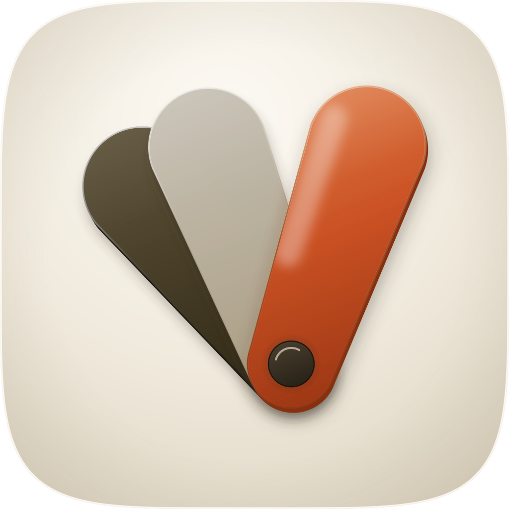
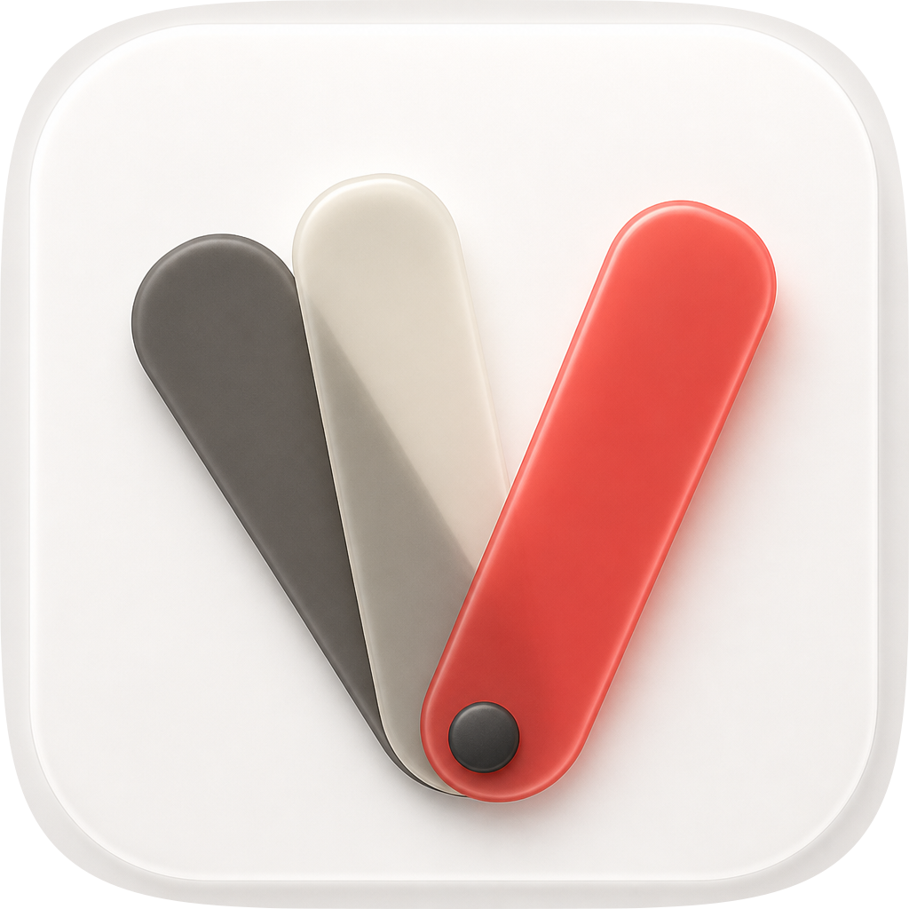
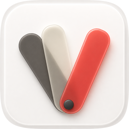
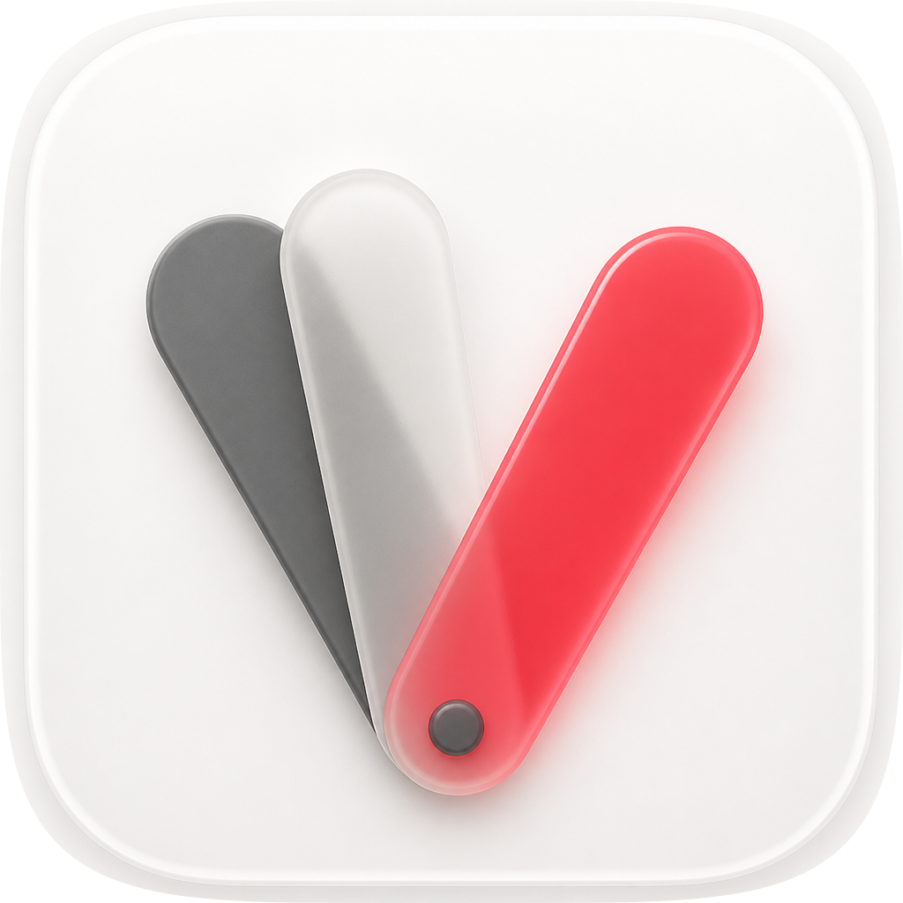
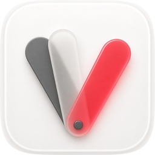
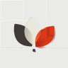

| Take | Hero at 1024, then renders at 128 / 64 / 48 / 32 / 16 css px (2× retina sources), plus the 16px squint magnified | Rubric | Verdict |
|---|---|---|---|
| engineA · icon.svghand-authored layered SVG (build_icon.py) — SHIPS |  |
11 / 12 | Passes all four non-negotiables on real renders: family superellipse with nothing baked, optically centred at 0.67 of the tile with 183px side margins, a nameable splayed-fan silhouette, and 0.202 RMS luminance contrast at 16px where the hot leaf and the gap between it and the pale pair both survive. Four named layers, 33 paths, 18 KB, fidelity.py structure PASS. Fails #7 on one element: dilated-ring figure-ground measures the gel leaf at 3.37:1 and the slate at 3.74:1, but the cream leaf at 1.13:1 — it is carried by its rim, seat edge and cast shadow, and at small sizes by being flanked, not by separating from the cushion. Ported from C1 after the raster read: full capsule ends and the taper into the rivet tab. |
| engineC1 · icon-engineC-5db443.pngGPT Image 2 raster, four corpus references — material target |   |
10 / 12 | Won the material and composition read and is why the master was rebuilt: it independently reached the same device from the same spec, and its capsule leaves and tapered tabs are better objects than the corner-radius paddles the master started with — both were ported. Measures 0.211 at 16px. Cannot ship: it bakes its own rounded tile, bezel and drop shadow inside the artwork, so it renders a double corner inside the family mask (#1, non-negotiable), and as a flat raster its identity is a colour relationship that dies under Dark/Clear/Tinted (#10). Its accent is a coral outside the family's 16–21° hue band, so it was read for material and not for palette. |
| engineC2 · icon-engineC-3a4e16-2.pngGPT Image 2 raster, second take — kept for the record |   |
8 / 12 | The same device rendered flatter and cooler: its frosted leaf sits at roughly 1.05:1 against a pure-white ground and dissolves entirely by 32px, which is the raster engine's named frost failure (#7, #4), and its accent has gone pink-red — two hue families away from the set. Same baked tile and flat delivery as C1 (#1, #10). Useful as the counter-example that decided the master's pale leaf had to be a warm off-white with a real seat edge rather than a white one. |
| engineB2 · icon-engineB-arrow-921e96.svgArrow 1.1, second vector take from the spec-as-brief | 4 / 12 | Confirms the device reads even in flat vector — three leaves on a rivet are legible with no material at all — and nothing else. Bakes its own corner radius rather than the family superellipse (#1), has no light model, no depth and no translucency (#5, #8), and its pale leaf is a near-white on a cool near-white ground that leaves the silhouette entirely: at 48px the fan reads as two leaves and at 16px as a red and black blob (#3, #4, #7). Its ground is a cool grey-blue ramp, off the porcelain register, and its accent is a pure red at roughly a third of the tile (#6). Nothing salvaged. | |
| engineB1 · icon-engineB-arrow-920b9d.svgArrow 1.1, first vector take — arrived after its call timed out |  |
3 / 12 | The weaker of the two Arrow takes, kept because it was a real generation rather than a discard: it reads the leaves as pointed lens petals, bakes a tiled field of rounded grey squares behind them as though the tile were a wall, detaches the rivet into a dot below the fan, and leaves stray scribble artefacts inside the vermilion petal. Cool grey ground off the porcelain register (#1, #6), no coherent light (#5, #8), and the pale petal leaves the silhouette on a pale ground (#3, #7). It did establish one thing the second take confirmed: this engine will not hold a shared pivot unless the brief says the leaves are pinned through a rivet. |
| measurement | engineA | engineB1 | engineB2 | engineC1 | engineC2 |
|---|---|---|---|---|---|
| 16px RMS luminance contrast (alpha-masked) | 0.202 | 0.187 | 0.220 | 0.211 | 0.191 |
| figure-ground, dilated ring (gel / slate / cream) | 3.37 : 3.74 : 1.13 | — | — | — | — |
| geometry bbox as a fraction of the tile | 0.67w × 0.64h | — | — | — | — |
| named layers / paths / bytes | 4 / 33 / 18 KB | 0 / 40 / 15 KB | 0 / 12 / 2 KB | flat raster | flat raster |